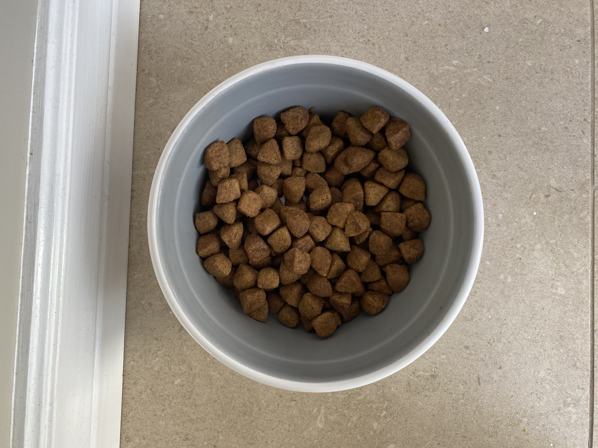
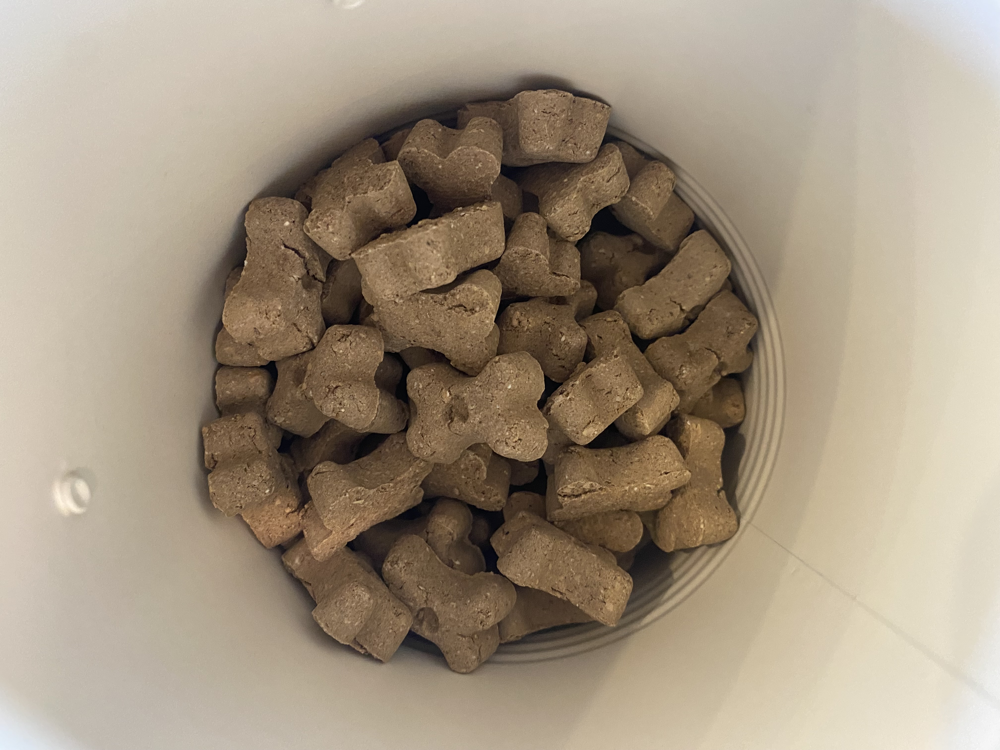
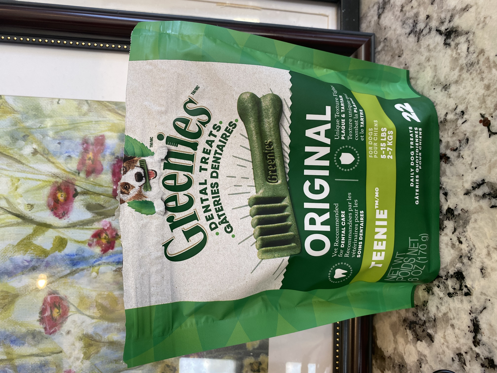
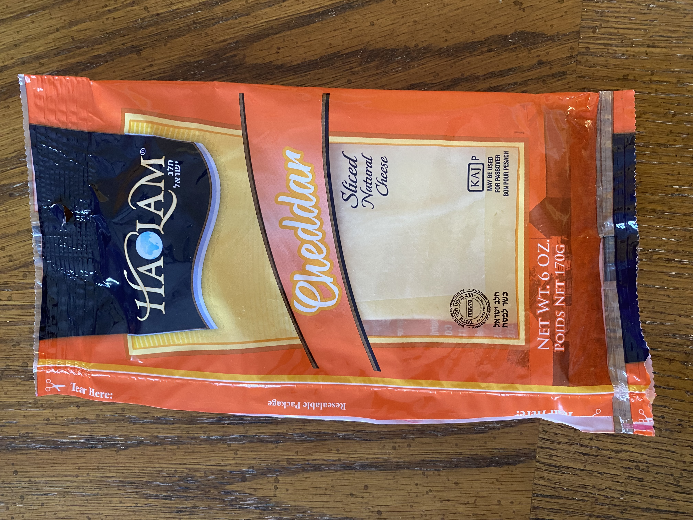
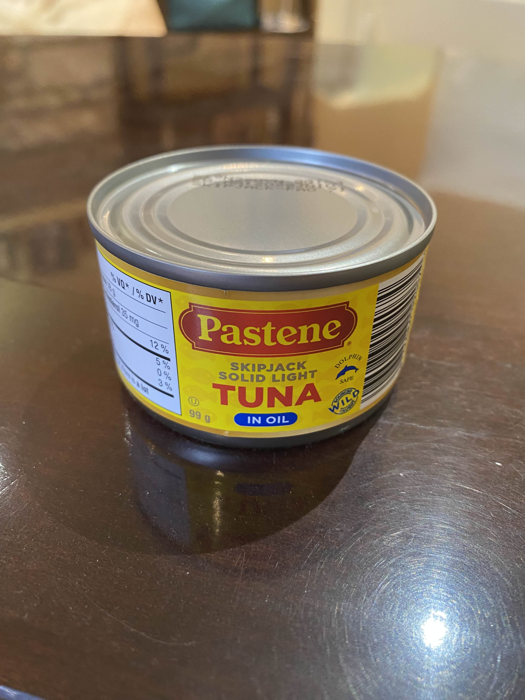
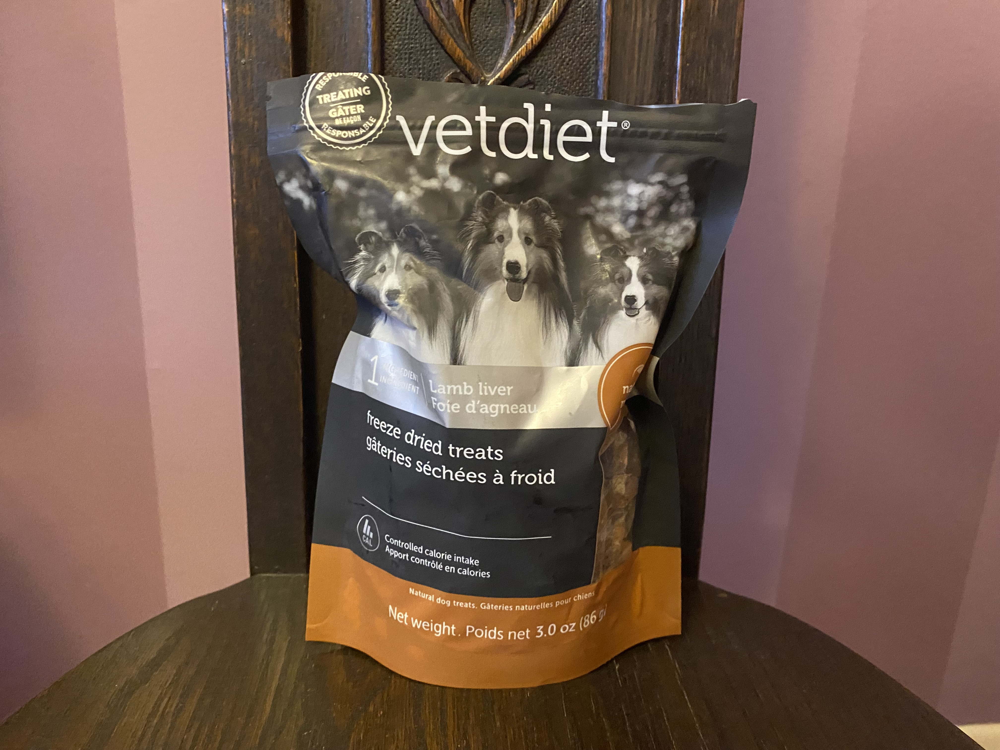
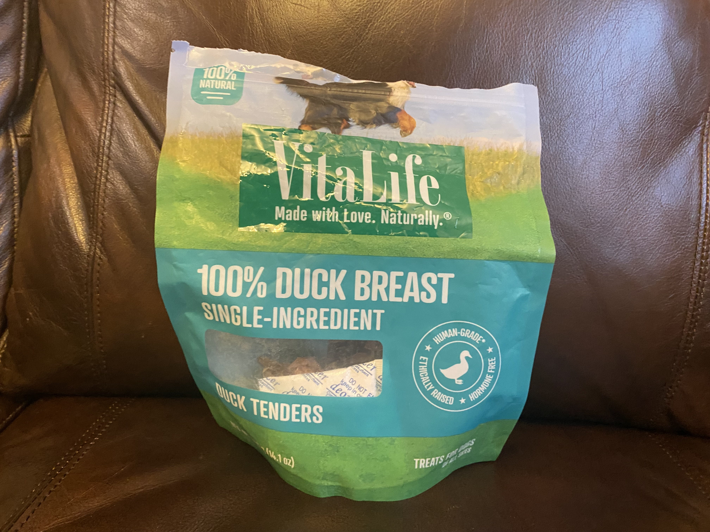

The standard and humble pebble. The pebble makes up the majority of the Poobster's daily caloric
intake, and for good reason; aiding in digestion and joint health.
Cookies

The Poobster's secondary food. He is given two cookies after his morning walk, and two
after his lunch walk.
Greenies

The greenie is a special food for the Poobster, given once a day or not at all. The Greenie is often
hidden in a safe place, or eaten for tooth and gum health.
Peanut Butter
Peanut Butter is given by Ma almost every morning. The Poobster enjoys licking the peanut butter out of his
Kong.
Cheese

Cheese is one of the few items of human food the Poobster can consistently get. When he hears the
crinkle of a plastic bag, he knows it's cheese time.
Tuna

Leftover tuna from lunch is also sometimes given to the Poobster as long as its not too spicy. He licks the
plate until there is nothing left.
Liver Treat

Liver treats are mostly given by Saba. Some would say he is given way too much, but the Poobster
would disagree.
Shabbat Treat

Given by Ellie every Shabbat, he has learned to expect it whenever he hears
Hebrew or songs in the house.
 Peanut Butter is given by Ma almost every morning. The Poobster enjoys licking the peanut butter out of his
Kong.
Peanut Butter is given by Ma almost every morning. The Poobster enjoys licking the peanut butter out of his
Kong.